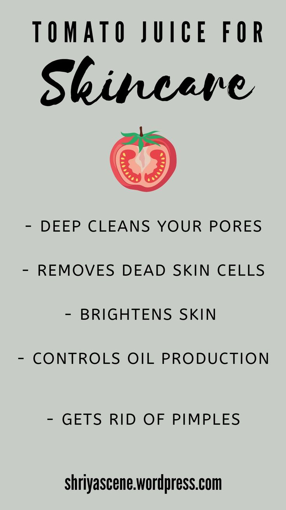

Tomato juice on your face?
I know what you're thinking — is this some kind of salad dressing ritual gone wrong? Trust me, I was just as skeptical. But when every other skincare blogger, aunty, and Pinterest board kept swearing by tomato juice for skin brightening, I had to ask: Is this just another skincare fad or a real natural glow-up secret?
So, like any dedicated skincare guinea pig, I took the plunge — and here's what happened.
